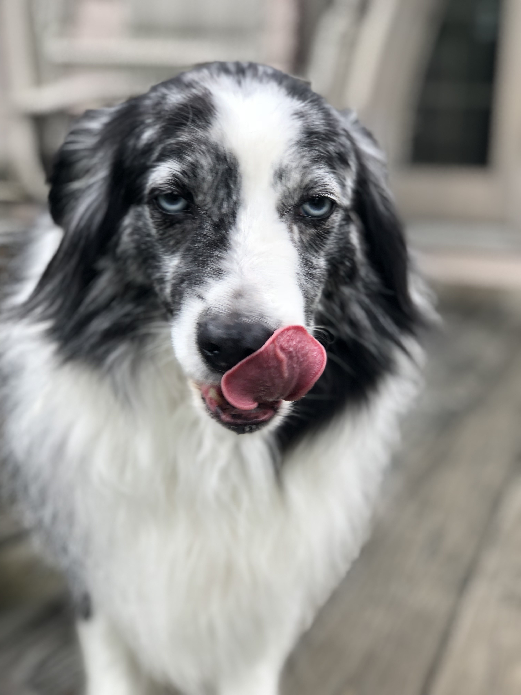

Resume / CV
Education
| 2019 - 2022 UNIVERSITY OF NEBRASKA OMAHA Ph.D. in Industrial Organizational Psychology GPA = 4.00 |
2016 - 2018 UNIVERSITY OF Akron M.A. in Industrial Organizational Psychology GPA = 3.78 |
2013 - 2016 KENT STATE UNIVERSITY B.S. in Psychology GPA = 3.75 |
Experience
WORK EXPERIENCE: |
2022 - Present Writer - IOATWORK
|
 |
2019 - 2021 External Consultant - The Center for Applied Psychological Services
|
2017 - 2019 IO Analyst, Client Solutions & Program Management - Corporate College
|
|
2017 - 2017 Consultant - Center for Organizational Research
|
TEACHING AND PROFESSIONAL ACTIVITIES: |
2019 - 2022 Teaching Assistant - University of Nebraska Omaha
|
2020 - 2023 Conference Reviewer
|
|
2023 - 2023 Journal Editor
|
RESEARCH EXPERIENCE: |
2019 - Present Lab Researcher - Diversity and Inclusion Research Lab
|
|  | 2019 - 2021 External Research Consultant - Tri-Faith
|
2015 - 2016 Research Assistant - Emotion, Stress, and Relationships Lab
|
Conference Presentations & Posters
Folberg, A., Votruba, A., Marshburn, C., Swanson, M., Crawford, D., Kaiser, C. (2023). Reimagining Resolution: Addressing Racism in Academic Institutions with Conflict Resolution. Interactive discussion to be presented at the annual conference for the Society for the Psychological Study of Social Issues, Denver, CO.
Ximenes, M., Folberg, A., Swanson, M. A., Dueland, L., Stepanek, S., Ryan C. (2023). The Role of Conservatism in Evaluations of Diversity Statements. Poster to be presented at the Midwestern Psychological Association, Chicago, IL.
Swanson, M. A.(2022). Can I Remain True to Myself at Work? An Experimental Study of Psychologically Safe versus Unsafe Workplaces on LGBTQ+ and Heterosexual Perceptions of Authenticity, Belongingness, Vigilance, and Resiliency. Poster presented at the Student Research and Creative Activity Fair, Omaha, NE.
Stepanek, S., Dueland, L., Folberg, A. M., Swanson, M. A., & Ryan, C. S. (2021).Whites (vs. Blacks) and conservatives exhibit less interest in applying for jobs that request diversity statements in application materials. Poster presented at the annual conference of the Association for Psychological Science, Virtual.
Swanson, M. A.(2021). Essential Meaningful Work: A Multistage Proposal for the Development and Validation of the Essential Meaningful Work Inventory (EMWI). Poster presented at the annual conference of the Association for Psychological Science, Virtual.
Crawford, D., Swanson, M. A., Dueland, L. B., Stepanek, S., & Ryan, C. (2021). A Missing Component of Diversity Training and Diversity Initiatives: Conflict Management Training. Poster presented at the annual conference for the Society for the Psychological Study of Social Issues, Virtual.
Dodds, B. L., Ryan, C. S., Swanson, M. A. (2021). The Relationships of Perceived Parental Social Support to Vigilance and Resilience among LGBTQ and Straight Cisgender Adults. Poster presented at the University of Nebraska Omaha’s University Honors Program, Omaha, NE.
Dueland, L. B., Folberg, A. M., Swanson, M. A., & Ryan, C. S. (2020). Perceptions of Requests for Diversity Statements in Job Advertisements. Poster presented at the annual meeting of the Society for the Psychological Study of Social Issues, Denver, CO. (Conference cancelled)
Crawford, D., Swanson, M. A., Dueland, L. B., Stepanek, S., & Ryan, C. (2020).Conflict management techniques within diversity initiatives: A critical missing link. Interactive discussion facilitated at the Society for the Psychological Study of Social Issues Conference, Denver, CO. (Conference cancelled)
Dueland, L. B., Folberg, A., Swanson, M. A., & Ryan, C. (2020). Reactions to selection processes involving diversity statements. Poster presented at the Society for Industrial Organizational Psychology Conference, Austin, TX.(Conference cancelled)
Swanson,M. A. (2015) The Effects of Positive Teacher-Child Relationships on School Achievement and Motivation in Adolescence. Poster presented at the Undergraduate Research Conference, Kent, OH.
Skills & Coursework
Skills |
Coursework |
Statistical Analysis Software: R, SPSS,PROCESS, SAS, Excel, Mplus, LIWC, SQL
Data Collection Software: Qualtrics, Survey Monkey, Cloud Research
|
|